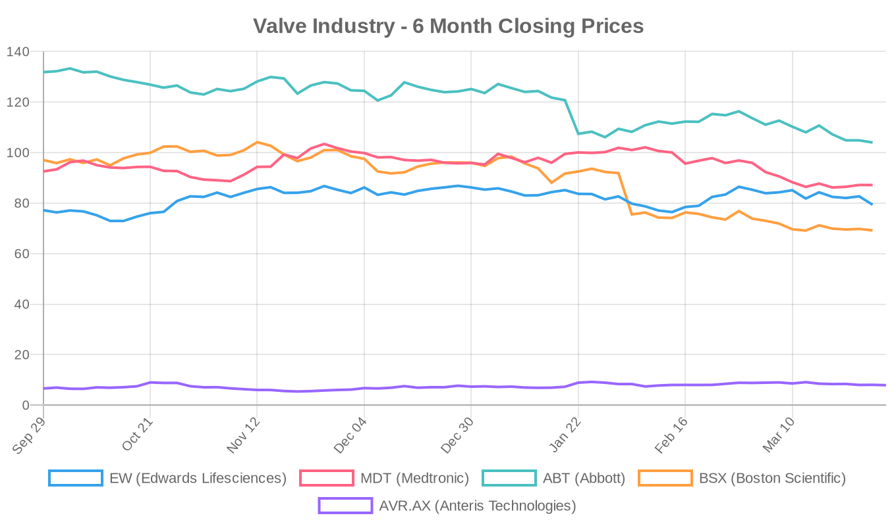
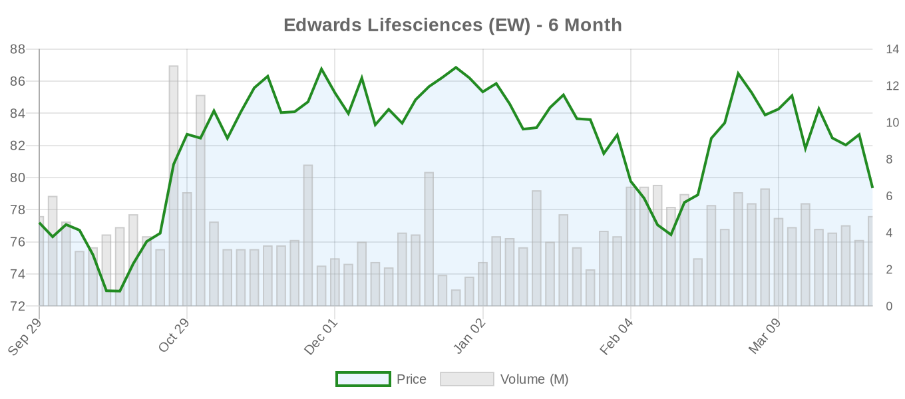
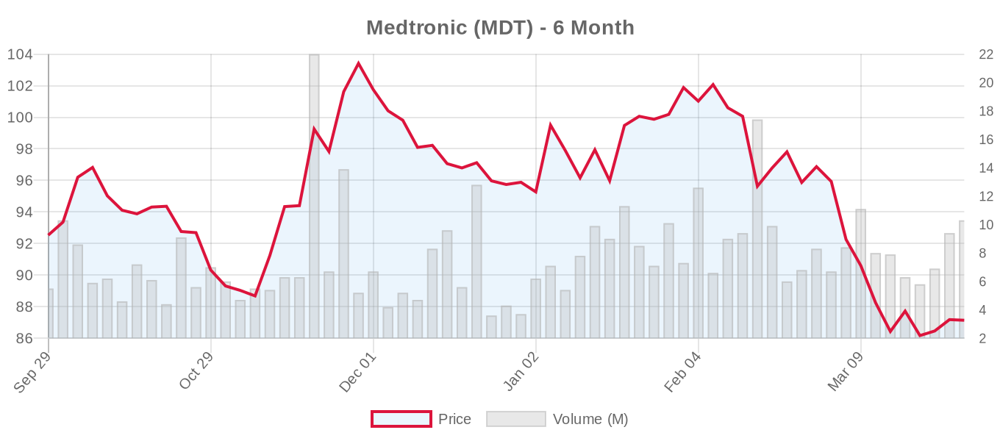
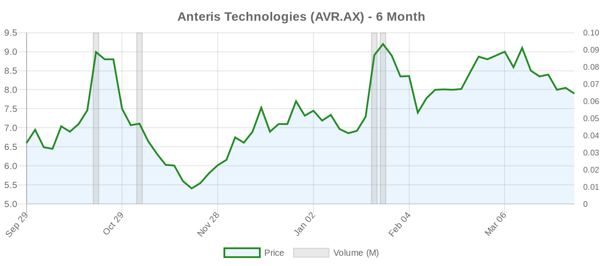

Executive Summary
Today's research highlights significant advances in valve technology across multiple platforms. Studies demonstrate promising safety and efficacy for XL-size Myval valves in large aortic annuli, while new evidence suggests SGLT2 inhibitors may improve long-term outcomes after TAVI in patients with reduced ejection fraction. Atrial secondary mitral regurgitation emerges as a distinct clinical entity requiring mechanism-specific treatment approaches, and the first-in-human Pivot-Bridge results show potential for simplified tricuspid regurgitation management.
As we continue our coverage of ACC Scientific Sessions 2026, several key themes emerge from today's findings: the expansion of transcatheter therapies to more challenging anatomies, the growing recognition of heart failure phenotypes in valve disease, and the ongoing evolution toward lifetime valve management strategies. However, many of these promising developments require validation in larger, randomized studies before changing clinical practice.
Today's Key Findings
[NOTABLE] The Myval balloon-expandable valve demonstrated 100% technical success in patients with extremely large aortic annuli (mean area 786.5 mm²), with no moderate or severe paravalvular leak at 12 months. However, this single-center study of just 15 patients highlights the need for larger multicenter validation before widespread adoption in this challenging anatomy.
[NOTABLE] SGLT2 inhibitor therapy was associated with improved survival (HR 0.57) and reduced heart failure hospitalizations in TAVI patients with LVEF <50%, though this retrospective analysis cannot establish causation and requires prospective validation.
The PROGRESS trial design was published, representing the first large randomized study (n=750) to test early TAVR versus surveillance in moderate aortic stenosis with at-risk features—a potentially practice-changing study that could expand TAVR indications significantly.
Aortic Valve (TAVR/TAVI)
A retrospective Lithuanian study evaluated the performance of XL Myval valves (30.5-32 mm) in 15 patients with large aortic annuli. Technical success was achieved in 100% of cases, with mean effective orifice area improving from 0.75 to 2.31 cm² at discharge and 2.4 cm² at 12 months. No patients developed moderate or severe paravalvular leak, though one required permanent pacemaker implantation. While encouraging, this small single-center experience requires validation in larger cohorts before informing routine clinical practice in large annuli.
A significant Turkish retrospective analysis examined SGLT2 inhibitor use in 226 TAVI patients with LVEF <50%. After propensity weighting, SGLT2 inhibitor therapy was associated with reduced all-cause mortality (HR 0.57, 95% CI 0.32-0.98) and lower composite outcomes of death or heart failure hospitalization. Notably, acute kidney injury occurred less frequently in SGLT2 inhibitor users (3.4% vs 17.4%). However, this observational design cannot establish causation, and dedicated randomized trials are needed to confirm these promising findings.
Greek investigators provided a comprehensive review of TAVI in porcelain aorta, emphasizing this as an anatomy-driven indication where TAVI avoids the embolic risks of ascending aortic manipulation during surgery. The review highlights that while neurological outcomes appear favorable compared to surgery in observational cohorts, the evidence remains limited by heterogeneous definitions and patient selection biases.
A propensity-matched comparison of 197 TAVI versus 197 Perceval sutureless valve patients showed better long-term overall survival with Perceval (p <0.001), though cardiovascular mortality was similar. TAVI was associated with significantly more paravalvular leak (23.4% vs 2.5%) and higher 1-year mortality (16.2% vs 9.1%). This challenges the expanding use of TAVI in intermediate-risk patients and underscores the importance of individualized treatment selection.
An analysis from a statewide collaborative found that unplanned mechanical circulatory support during TAVI occurred in 0.57% of 7,735 procedures but was associated with dramatically worse outcomes, including 37% cardiac arrest rates and 18% conversion to surgery. This emphasizes the importance of careful patient selection and highlights TAVI's limitations in unstable patients.
A large Austrian registry with national validation found that post-TAVI permanent pacemaker implantation was not associated with increased mortality at 1 or 5 years, while pre-existing pacemakers identified patients at higher long-term risk. This provides reassurance about pacemaker-related outcomes but suggests pre-existing conduction disease reflects underlying cardiac pathology.
Mitral Valve (MitraClip, PASCAL, TMVR)
A comprehensive Italian review characterized atrial secondary mitral regurgitation (A-SMR) as a distinct phenotype driven by left atrial enlargement and mitral annular dilatation, often associated with atrial fibrillation and heart failure with preserved ejection fraction. The authors argue that surgical annuloplasty directly targets the dominant mechanism and may offer superior durability compared to transcatheter edge-to-edge repair in this annular disease. This aligns with the 2025 ESC Guidelines' recognition of A-SMR as a specific clinical entity requiring tailored management approaches.
An Italian state-of-the-art review on transcatheter mitral valve replacement for degenerative mitral stenosis secondary to mitral annular calcification highlighted the critical role of neo-LVOT assessment in preventing the primary cause of procedural mortality. The authors noted that despite high technical success rates, complications including paravalvular leak, valve thrombosis, and device migration remain more prevalent than in aortic interventions, emphasizing the need for continued technology refinement.
A focused review on secondary mitral regurgitation in advanced heart failure emphasized that careful phenotyping remains essential for identifying COAPT-eligible patients—those with severe MR but less extreme ventricular dilatation. The authors stressed that intervention in patients with proportionate MR has not shown benefit, reinforcing the importance of the "disproportionality" concept.
Tricuspid Valve (TriClip, TTVR)
[NOTABLE] The first-in-human experience with the Pivot-Bridge device for severe tricuspid regurgitation showed promising early results in 15 patients. This novel atraumatic vertical spacer achieved procedural success in all cases with a mean procedure time of 47 minutes, guided only by fluoroscopy and transthoracic echocardiography. All patients achieved at least one-grade reduction in TR, with significant decreases in vena contracta width and effective regurgitant orifice area. The device was subsequently removed in all patients—either surgically or percutaneously—suggesting potential as a bridge therapy for stabilizing high-risk patients.
A comprehensive European review outlined standardized protocols for tricuspid regurgitation assessment from referral to expert heart valve centers. The document provides practical algorithms for multimodality imaging and emphasizes the importance of multidisciplinary collaboration in line with the 2025 ESC/EACTS Guidelines. This systematic approach may facilitate more consistent evaluation and management of this historically neglected condition.
Surgical vs. Transcatheter Comparisons
The Greek propensity-matched study comparing TAVI with Perceval sutureless valves represents one of the most direct comparisons of transcatheter versus surgical approaches in similar patient populations. The superior long-term survival with Perceval and significantly higher paravalvular leak rates with TAVI challenge assumptions about transcatheter superiority in intermediate-risk patients and highlight the continued importance of surgical expertise.
An evidence-based review on strategic valve upsizing through annular enlargement techniques argues for a lifetime management approach that optimizes initial valve selection to improve both immediate hemodynamics and future valve-in-valve feasibility. This perspective emphasizes that surgical programs adopting systematic approaches to valve sizing may achieve better long-term outcomes than transcatheter approaches constrained by native anatomy.
Device & Technology
A computational study compared transcatheter heart valve expansion mechanics across different bicuspid aortic valve morphologies and stent designs. The analysis revealed fundamental trade-offs between expansion uniformity and implant-induced stress, with balloon-expandable stents showing better uniformity but higher stress levels. These findings provide biomechanical insight for personalized device selection in challenging BAV anatomies.
A fully automated CT-based pipeline for myocardial extracellular volume (ECV) quantification demonstrated feasibility for standardized pre-TAVI risk stratification. The automated system showed negligible bias compared to manual measurement and identified ECV metrics associated with adverse outcomes at 12 months. This technology could enable routine, operator-independent assessment of myocardial fibrosis in TAVI planning.
The double LLAMACORN technique was described as a novel approach for bilateral leaflet modification before valve-in-valve TAVI in high coronary obstruction risk cases. This streamlined alternative to BASILICA may simplify complex procedures while preserving coronary flow, though experience remains limited to case reports.
Clinical Trial Updates
[LANDMARK] The PROGRESS trial design was published, detailing this pivotal randomized study comparing early TAVR versus clinical surveillance in up to 750 patients with moderate aortic stenosis and at-risk features. The primary endpoint is the composite of death or heart failure events at 2 years, with 10-year follow-up planned. This represents the first large randomized trial in moderate AS and could fundamentally change management paradigms if positive.
Aortic Valve Trials
- NCT06420830: SAPIEN 3 Ultra RESILIA Valve registry - Status: RECRUITING - 150 patients, central echo core lab analysis
- NCT03383445: VIVA Trial (TAVR vs SAVR in small annuli) - Status: ACTIVE_NOT_RECRUITING - 300 patients
- NCT07450196: SAPIEN 3 for Type-0 bicuspid AS in China - Status: NOT_YET_RECRUITING - 170 patients
- NCT06455787: J-Valve Transfemoral Pivotal - Status: RECRUITING - 194 patients
- NCT02701283: [LANDMARK] Evolut Low Risk long-term follow-up - Status: ACTIVE_NOT_RECRUITING
Mitral Valve Trials
- NCT04198870: [LANDMARK] REPAIR-MR (MitraClip vs surgery) - Status: ACTIVE_NOT_RECRUITING - 500 patients
- NCT05051033: [LANDMARK] PRIMATY (MitraClip vs medical therapy) - Status: RECRUITING - 450 patients
- NCT03242642: [LANDMARK] Intrepid TMVR Pivotal - Status: RECRUITING - 1,056 patients
Tricuspid Valve Trials
- NCT03904147: [LANDMARK] TRILUMINATE Pivotal (TriClip) - Status: ACTIVE_NOT_RECRUITING - 572 patients
- NCT04097145: [LANDMARK] CLASP II TR (PASCAL) - Status: RECRUITING - 870 patients
- NCT04482062: [LANDMARK] TRISCEND II (Evoque replacement) - Status: ACTIVE_NOT_RECRUITING - 864 patients
Valve Industry Stocks

Valve industry stocks faced mixed trading on Friday, with Edwards Lifesciences leading declines while Medtronic posted modest gains. The sector continues to navigate challenges from competitive pressures and reimbursement uncertainty, though long-term growth drivers remain intact.
Edwards Lifesciences (EW)

Edwards closed at $79.34, down 3.36% on Friday, underperforming the broader market. Despite the daily decline, shares remain up 2.79% over six months. With a forward P/E of 24 and strong analyst support (average target $97.12), the recent pullback may present an attractive entry point ahead of April 22nd earnings. Market cap stands at $46.1B with beta of 0.93, reflecting moderate volatility relative to the market.
Medtronic (MDT)

Medtronic gained 0.21% to $87.14, showing relative strength amid sector weakness. However, shares remain down 5.82% over six months as the company navigates competitive pressures in structural heart. With a forward P/E of just 14.39 and analyst target of $111.08, the stock appears undervalued. The $111.9B market cap and 0.73 beta suggest defensive characteristics. Earnings expected May 20th.
Abbott (ABT)

Abbott declined 0.55% to $103.99, extending its challenging six-month performance (-21.13%). The MitraClip pioneer faces increasing competition from Edwards' PASCAL system and pricing pressures. Despite the pullback, analysts maintain a $132.64 average target, suggesting significant upside potential. Market cap of $180.7B with April 16th earnings approaching.
Boston Scientific (BSX)

Boston Scientific dropped 1.43% to $69.17, continuing its steep six-month decline of 28.72%. The company's structural heart division faces integration challenges following recent acquisitions. Strong analyst support persists with an average target of $101.84 and "strong buy" rating, reflecting confidence in the long-term growth trajectory. Market cap $102.8B.
Anteris Technologies (AVR.AX)

Anteris fell 1.86% to AUD $7.90 but remains the sector's six-month leader with +19.70% gains. The DurAVR transcatheter valve developer continues advancing through clinical trials, with single analyst maintaining AUD $13.00 target. The $0.8B market cap reflects high-growth, high-risk profile typical of emerging device companies.
Looking ahead, the sector faces key catalysts including Q1 earnings season, ongoing clinical trial readouts, and potential FDA approvals for next-generation devices. While near-term headwinds persist from competitive dynamics and reimbursement pressures, the aging global population and expanding treatment indications support long-term growth prospects.
Financial Analysis
Edwards Lifesciences continues attracting analytical attention following its recent pullback, with multiple sources questioning whether the decline represents a buying opportunity. The company's forward P/E of 24 appears reasonable for a market leader in transcatheter valves, though competitive pressures from expanding TAVR populations and pricing dynamics remain concerns. Recent underperformance versus peers suggests market skepticism about near-term growth prospects, particularly as the low-risk TAVR expansion matures.
The broader structural heart sector reflects a maturing market dynamic where early rapid growth phases are giving way to more measured expansion and margin pressure. Abbott's 21% six-month decline illustrates challenges facing established players as newer technologies emerge and reimbursement environments tighten. Boston Scientific's 29% drop reflects integration complexities as companies pursue scale through acquisitions.
Medtronic's relative outperformance and attractive valuation metrics suggest the market may be underestimating the diversified medtech giant's structural heart potential. The company's broad portfolio and global reach could provide advantages as markets mature and cost containment becomes more critical.
Emerging players like Anteris demonstrate that innovation premiums persist for companies advancing differentiated technologies. However, the compressed timeline from concept to commercialization and intense competitive dynamics create both opportunities and risks for smaller players seeking to establish market positions.
Today's findings underscore both the remarkable progress and persistent challenges in structural heart disease management. While new technologies and expanded indications offer hope for patients previously considered inoperable, the imperative for rigorous clinical evidence and thoughtful patient selection remains paramount. As we continue following developments from ACC Scientific Sessions 2026, the balance between innovation and evidence-based practice will likely define the field's future trajectory.